Solution Hub
How the hub page of the Solution Designer prototype was aligned to QUIX and the Equinix Customer Portal (ECP), decision by decision, with the options that were considered and why each one was chosen.
Design system followed. All component sizes, colours and patterns in this log come from QUIX, the Equinix design system: the documentation at quix.equinix.com — QUIX Design System and the Figma library 🧩 QUIX Component Library v2. Where the documentation example and the live ECP implementation differed, ECP was followed, and the log says so.
Working method
Every change below followed the same loop. The point of recording it is that the reasoning can be checked, not just the outcome.
Decisions at a glance
| # | Topic | Decision | Main reason |
|---|---|---|---|
| 1 | Text casing and dates | Title Case for labels, headers, buttons and badges; sentence case for cell data; dates as Nov 17, 2026 18:56 GMT | QUIX content guideline, with the live ECP date format taking precedence over the docs example |
| 2 | IBX column | Show at most two IBX tags, then an ellipsis tag that opens the details drawer | Keeps rows one line tall; full list lives in the drawer |
| 3 | Button sizes | Toolbar controls at QUIX Small (32px); everything else stays Medium (36px) like ECP | Measured: ECP and the prototype were both Medium. Small chosen for density in the toolbar |
| 4 | Page layout and pagination | Grey page, one white card holding toolbar, table and an ECP-style pagination footer | Matches ECP Fabric One and the QUIX Data Table pattern |
| 5 | Toolbar alignment | Expand / Collapse becomes an outline button; both right-hand rows share one fixed-width cluster | Clean edges; the short label frees the width the bolder Sort value needs |
| 6 | Filter control styling | Sort and Filters use the QUIX Data Filters pattern; Collapse keeps the outline button | That is the component ECP uses in its filter bar; buttons stay buttons |
| 7 | December Fabric One review | Sort indicators on sortable headers; badges to 24px; layout confirmed | New ECP designs confirm the card layout and pagination already built |
| 8 | Quick filters vs drawer | Keep both; rename tiles "Proposal Status"; chips show drawer-only filters; quick filters grouped at the top of the drawer | Inline plus drawer is the ECP pattern; the only redundancy was the chips |
| 9 | Flat view status | Split into Proposal Status and Option Status columns, each sortable | Stacked badges contradicted each other and broke one-value-per-cell and sorting |
1Text casing and date format
Evidence
- QUIX content guideline: table headers in Title Case, one to three words; data cells in sentence case; one value per cell; dates as "Month Day, Year".
- ECP Share Solution drawer: Title Case for titles, field labels, buttons and tabs; sentence case for body copy and helper text.
- ECP Solution Builder table: dates rendered as
Nov 17, 2026 18:56 GMT, abbreviated month, zero-padded day, 24-hour time, GMT label.
Options considered
- Follow the QUIX docs example literally, "November 17, 2026" with the full month.
- Follow the live ECP implementation, which uses the abbreviated month and a timestamp with GMT.
- Split multi-value status cells per the one-value rule (deferred; see decision 9).
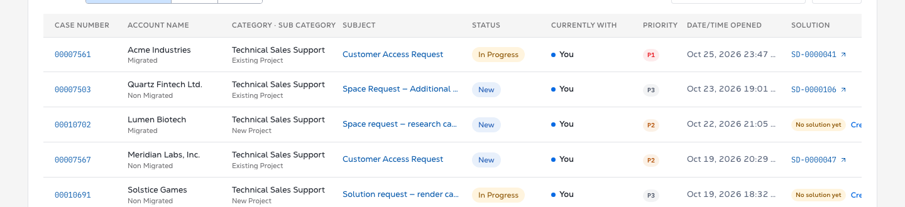
Oct 25, 2026 23:47 GMT; date-only fields such as Customer Requested Date read Dec 15, 2026.2IBX column: two tags, then an ellipsis
Evidence
Multi-site solutions produced three or more IBX tags in one cell, which wrapped the row to two lines and broke the table rhythm. The details drawer already lists every site per option.
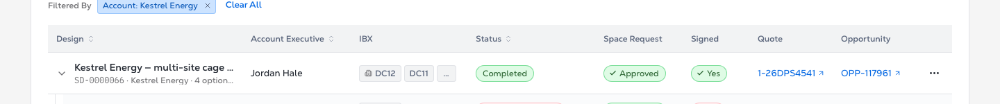
3Button sizes against ECP
Evidence
- QUIX button-solid / button-outline / button-toggle specs read from the library: Large 40px with 16px Bold label, Medium 36px with 14px Bold, Small 32px with 12px Bold and 12px side padding.
- Prototype measured in the browser at 1440px: New Design, Filters, Collapse and the toggle groups were all 36px with 14px Nexa Text Bold, i.e. QUIX Medium. Nexa Text is installed, so the font renders as in ECP.
- Both screenshots normalised using the 60px QUIX global header as a ruler: the prototype's New Design measured 36.3px and ECP's Create Interconnect 35.6px. The perceived difference came from screenshot zoom, not from the buttons.
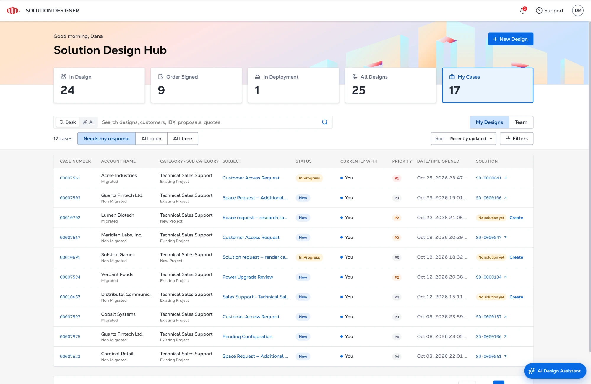
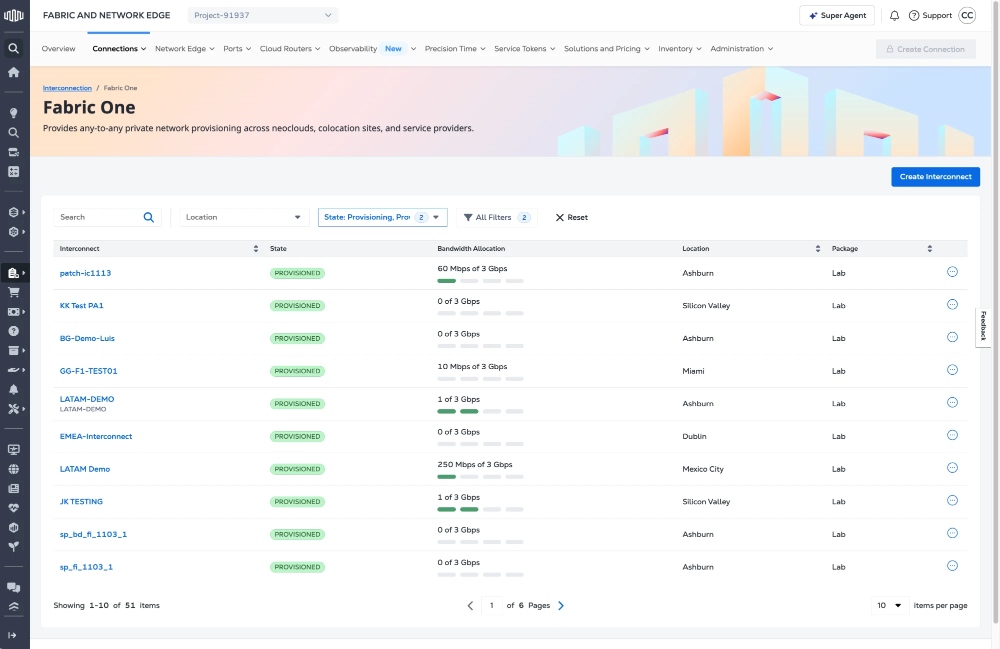
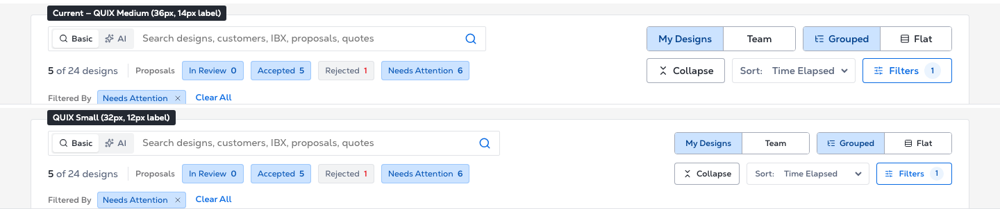
Options considered
- Keep Medium everywhere: exact match to ECP's Fabric One bar and Marketplace buttons.
- Small for the toolbar only: lighter, sits closer in weight to the 28px filter chips, but reads lighter than ECP.
4Page layout and pagination
Evidence
ECP Fabric One places Search, Location and State filters, the table and the footer in one white card on a grey page. The footer reads "Showing 1–10 of 51 items", "‹ 1 of 6 Pages ›" with an editable page box, and "10 ▾ items per page".
Options considered
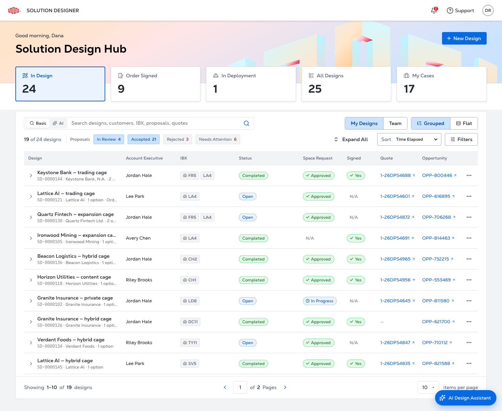
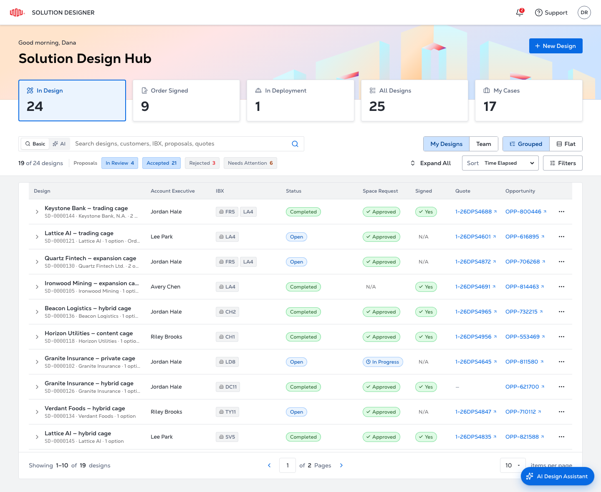
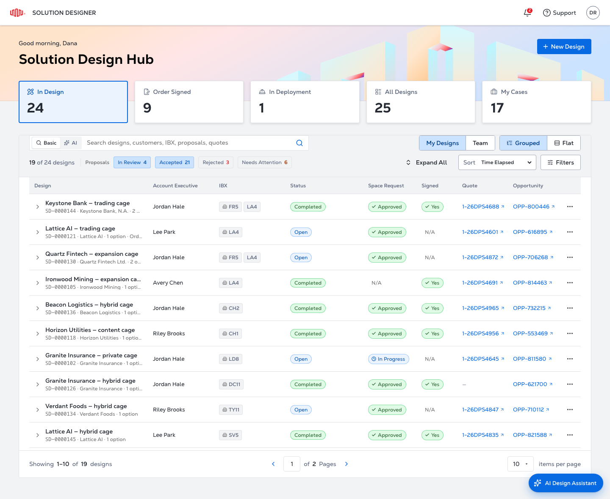
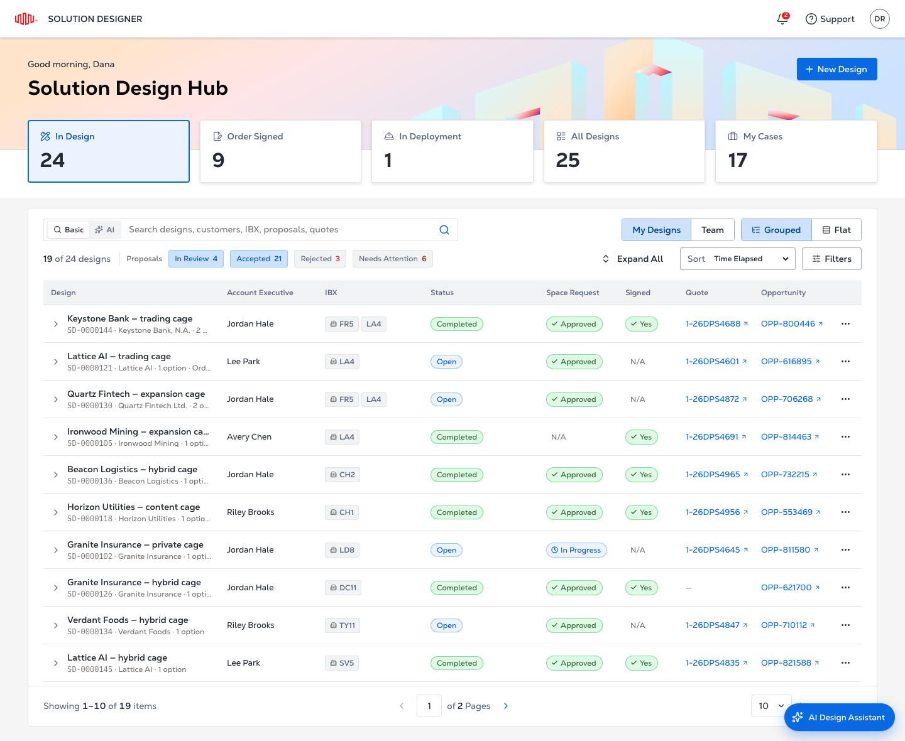
5Toolbar alignment and the Expand / Collapse button
Evidence
The first row holds two toggle groups; the second holds Collapse, Sort and Filters. Their natural widths differed by about 55px. When Sort later moved to the bolder 14px select-filter label, it needed about 30px more, which is exactly what dropping "All" from the Collapse label recovers.
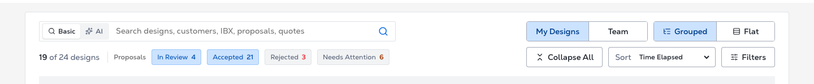
Options considered
- Keep "Collapse All" and widen the cluster to 470px.
- Rename to "Collapse" / "Expand" and keep the cluster at its original width; the chevrons icon, tooltip and accessible name keep the full meaning.
- Icon-only button: shortest, but less discoverable.
6Filter control styling
Evidence
- QUIX button-outline: 1px stroke in the darker secondary stroke (#a4aab7), near-black Bold label. Our Collapse and Filters matched this spec exactly.
- QUIX Data Filters pattern, which ECP's Search / Location / State / All Filters use: 1px light stroke (#e1e3e7), grey Bold 14px label, white fill; applied state turns label and stroke blue; count in a pale blue pill.
- QUIX button-toggle spec is stronger than ours (dark stroke, solid blue selected), so our toggles were already the softer reading.
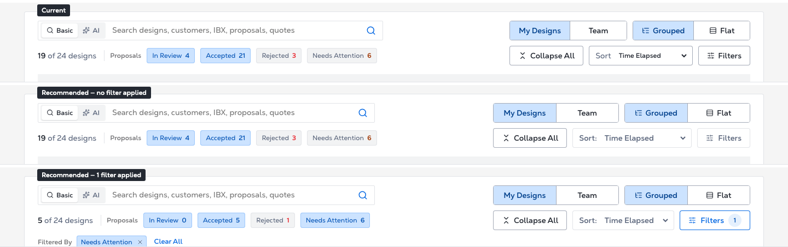
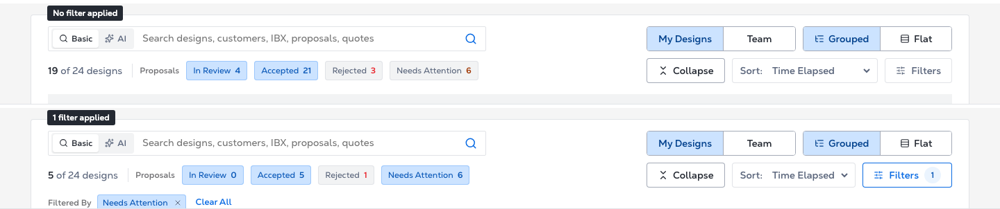
7Review against the December 2026 Fabric One designs
Evidence
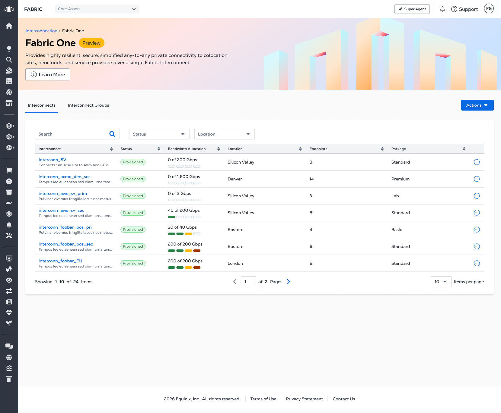
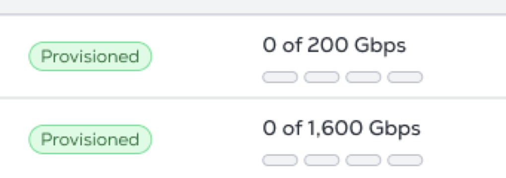
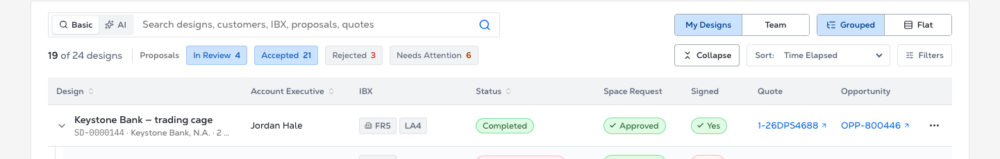
8Quick filters on the page versus the Filters drawer
Evidence
The inline tiles and the drawer already drove one shared state. The duplication was visual: Proposal Status and Needs Attention appeared as tiles, again in the drawer, and a third time as chips. ECP Fabric One itself repeats its primary inline filters inside "All Filters" with one count pill, so inline plus drawer is the sanctioned QUIX Data Filters pattern.
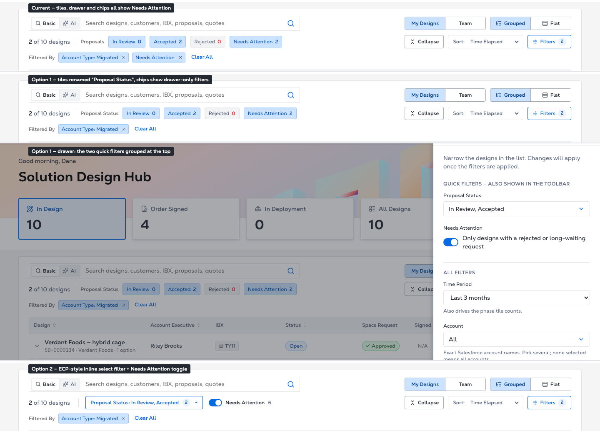
Options considered
- Option 1, keep both and tidy the roles. Tiles stay because their live counts are the work-queue value; chips stop echoing the tiles; the drawer makes the mirroring explicit.
- Option 2, ECP-literal inline select filters. Shorter bar, but the per-status counts disappear until the dropdown opens.
- Option 3, drawer only. Cleanest toolbar, hides the counts users touch most.
9Flat view: two statuses in one column
Evidence
- Flat view shows one proposal per row. The top badge was the proposal's own status (In Review, Accepted, Rejected); the bottom badge was the status of the design option it belongs to (In Progress, Shared with Customer, Customer Rejected, Finalized). "Accepted" above "Customer Rejected" is valid data but reads as a contradiction.
- QUIX asks for one value per cell so sorting and filtering stay predictable. The newly added Status sort was sorting by the solution's status, a value not shown in Flat view at all, which the stacked cell hid.
- Earlier in the casing pass, splitting had been proposed and deferred by the designer; the question was reopened once the sort behaviour surfaced.
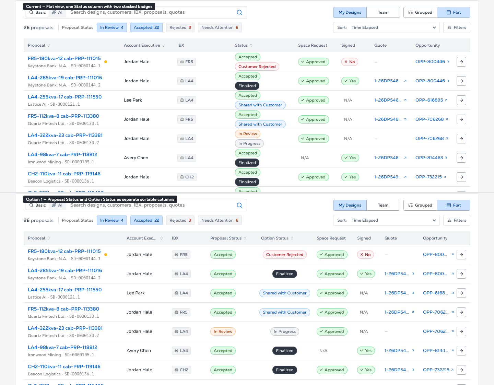
Options considered
- Split into two columns and rebalance widths: clearest, each column sortable; costs width.
- Keep one cell and add "Proposal" / "Option" captions: no width cost, sorting still undefined.
- Proposal status in the column, option status in the meta line: one value per cell, option status loses prominence.
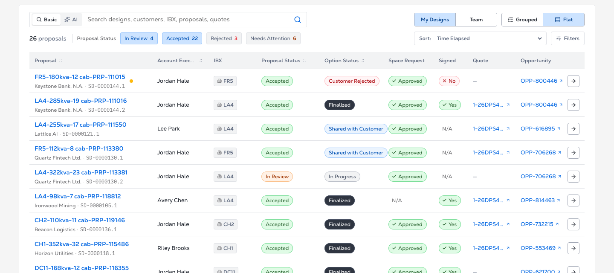
Appendix
QUIX specs read from the component library (Figma, QUIX Component Library v2)
| Component | Values used |
|---|---|
| button-solid / button-outline / button-borderless | Large 40px · 16px Bold · 16px padding; Medium 36px · 14px Bold · 16px; Small 32px · 12px Bold · 12px. Outline stroke #a4aab7 (action/secondary/stroke), label #242932. |
| button-toggle / button-toggle-group | Same three heights. Spec: unselected stroke #5a657b, selected fill #086ae3 with white label. Prototype uses a softer blue-fill selected state. |
| Data Filters pattern, select-filter, _button-filter | 36px fields, stroke #e1e3e7 (input/field/stroke), label #5a657b Bold 14; _button-filter hover fill #ebf4fe, text #0655b6. |
| badge-outline (Medium, Success) | 24px, radius pill, stroke #7cde9a, fill #dffbe5, 12px side padding. |
| badge-solid (Large, Warning) | 32px, fill #fdb90d, text #242932, 16px label. |
| global-header | 60px. Used as the ruler to normalise screenshots taken at different zoom levels. |
ECP references
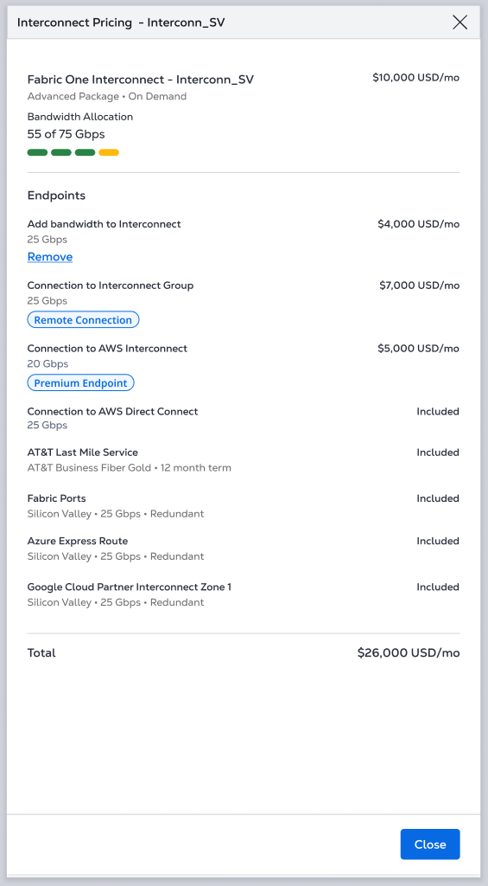
Open items
- Confirm with the ECP design team whether outlined badges are the target variant for all status badges.
- Decide whether Solution Designer carries a "Preview" badge beside the page title at launch.
- Consider a QUIX icon-button for the row "⋯" action to match the December designs.
- Mirror the text and layout changes into the Figma hub frame in GTST | R5 once the design settles.
Links
- QUIX Design System documentation: https://quix.equinix.com/40184d3a9/p/022459-quix-design-system
- QUIX Component Library v2 (Figma): https://www.figma.com/design/ZQE9aXwYyHHoqrWbjOysn6
Files
- Prototype:
2026_1116/Solution Designer.html(single-file React, QUIX tokens, in-file router). - No-access page:
2026_1116/No Access.html. - This log and its images:
2026_1116/Solution Hub Decision Log/.